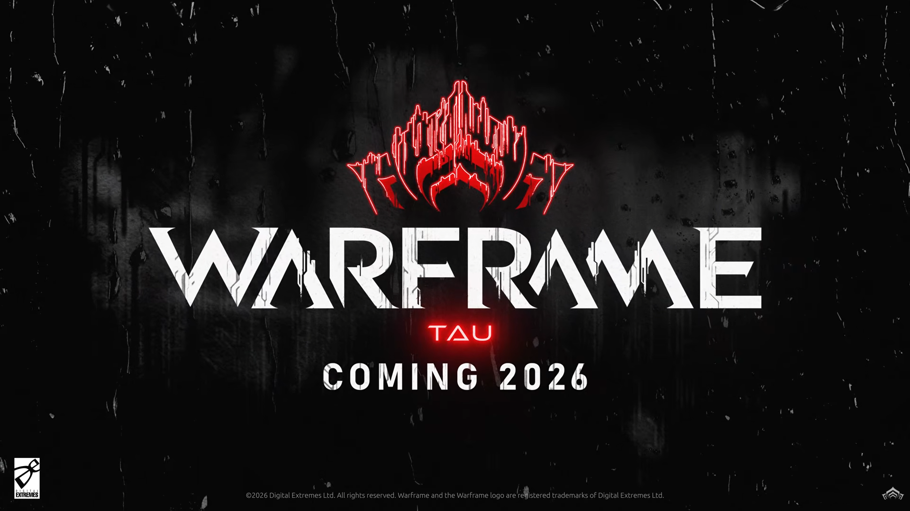
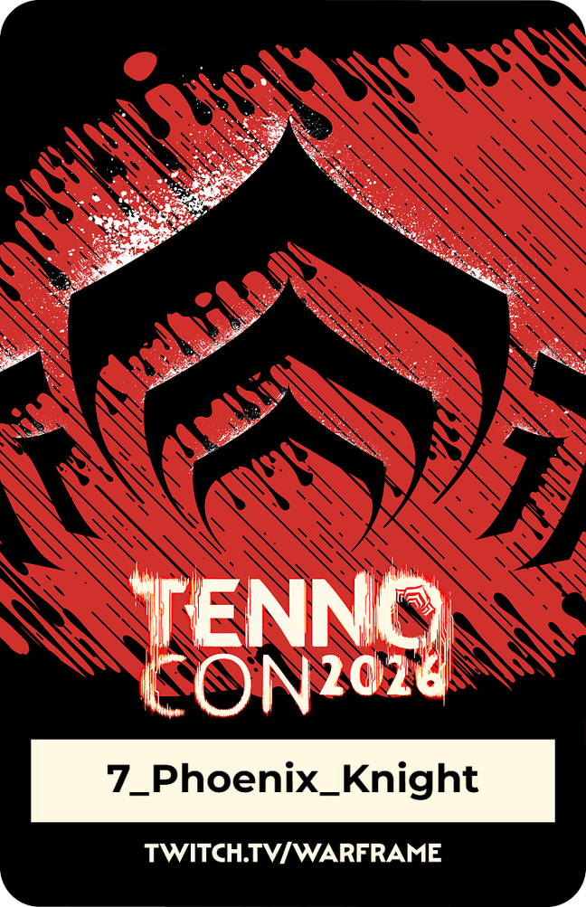

Launch Readiness Report · Warframe: Tau · Digital Extremes
Pre-launch read. Written 13 July 2026 from the TennoCon 2026 reveal and published on LinkedIn the same day (original post). Tau has not shipped, and nothing here has been graded against it yet. When it ships, the grade goes next to this page, not over it.

The call
What this is. A launch-readiness plan for Tau, the first new star system in Warframe's 13-year history: what to measure on day one so the retention story is visible before it is over.
What I did. Mapped the core loop, then named the events that separate a player who came back for the reveal from one who stays, across behaviour, economy, infrastructure and the dashboard itself.
Why it matters. The metric that greenlights Tau and the metric that rescues it point in opposite directions. Launch reactivation gets the headline. D30 one-and-done churn tells you whether there is a tail. Ship both on one dashboard, or you are reading the flattering half.
Pillar 01 · Behavioural loop & telemetry
To predict D30 churn on day one, you watch what players do in week one. A retention funnel only reports the loss after it has happened.
The loop being instrumented
Content-island signal
content_exhaustion_velocity vs reward_replenish_rate. How fast veterans burn unique rewards against the live-ops restock cadence. The leading indicator of the D30 exhaustion curve.
One-and-done signature
fornax_mission_completed vs fornax_return_d7. The central risk is Fornax becoming a "visit once and leave" city. This catches it in week one instead of month three.
Activation wall
tau_gate_cleared vs fornax_mission_completed. Veterans who unlock Tau but never walk in, since access is gated behind existing story content.
Transit-friction hook
vessel_transit_initiated per session. The per-session cost of leaving the Origin System for the first new star chart in 13 years.
Pillar 02 · Economic stabilisation & value capture
A new currency either feeds global progression or it becomes a closed loop inside one region. The ledger design decides which, not the fiction.
New faucets
Bloom, the in-universe addictive substance. Portau card winnings, a parallel currency that either floods or strands if left unmanaged.
Sinks
Time-gated Hunra bounty cycles to pull Bloom velocity. The jazz casino hub as an optional high-variance sink for surplus.
Cross-inflation guardrail
Ring-fence the Tau economy from Origin-System currencies so Bloom faucets do not devalue existing Plat and Ducat sinks. The community's word for thin grind value is "player revolt".
bloom_tokens_sunk_locally vs bloom_tokens_converted_to_global_progression, per cohort. Whether the card economy feeds global player equity or dead-ends inside Fornax.
Pillar 03 · Tech / ops infrastructure
A star chart outside a 13-year-old Origin System is new instance-routing topology to provision, not just new art to render.
Two launch regions
Fornax plus one unannounced region means new matchmaking cells and instance routing standing up at once.
Zero-downtime deploy
Blue-green patching for the winter launch and its hotfix cadence. Jade Shadows' turbulence is the pattern to avoid, and DE said Tau was given "undistracted" landing room.
State validation
Portau outcomes and Bloom rewards resolved server-side, so a brand-new economy cannot be spoofed from the client.
Session-momentum signal
server_provisioning_latency vs queue_abandonment_rate. Whether backend strain is killing sessions before players load in. The TennoLive Relay on Saturn, open through 13 July, was a live rehearsal of that synchronised-instance load.
Concurrency provisioning
Provision Tau's winter launch above the 157k line, toward the all-time peak, for headroom.
157,162 and 181,509 are SteamCharts monthly and all-time peaks. The ~126,000 figure for the previous TennoCon comes from a community creator's post, not from Digital Extremes, and is shown as context only.
Pillar 04 · The balanced strategic matrix
Each metric here has a partner that catches it lying.
North star
Tau D30 veteran re-engagement. Tau is the single strongest reactivation driver on the roadmap.
Counter-metric
Fornax D30 one-and-done churn: the share of players who finish the story run and never return.
Exploit surface
Bloom and Portau farming macro-bots, and progression runners rushing the gated unlock. Brysko's Corecracker auto-targeting kill-orbs are a candidate AFK-farm vector.
Roadmap guardrail
Origin-System update cadence health, since the loudest friction theme is content drought everywhere else while Tau ramps.
A sub-feature that does not recirculate value into the primary loop is an expensive distraction, not an ecosystem.

TennoCon 2026 · Fornax + Brysko
None of this shows up in a trailer. All of it decides whether Tau has a loop or only a moment.

Part of a TennoCon 2026 series. The fall update read is next: Making the fall bridge hold until winter. The measured teardown behind the series is The Venus Gate.